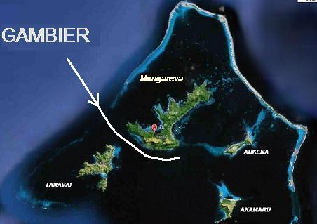

|
Le récit de J.A. MOERENHOUT, arrivant en février 1834
Nous distinguâmes la principale des îles Gambier dans la matinée du 6 février 1834, à la distance, d'environ quarante milles, ce qui fit grand plaisir à tout le monde à bord; car, par une imprudence impardonnable, nous avions embarqué si peu d'eau à Valparaiso, que, déjà depuis dix jours, nous étions à la ration, et qu'au moment où nous eûmes connaissance de l'île, il ne nous en restait pas vingt-cinq gallons*. Toute la nuit, les vents furent légers; mais les courans nous portaient un peu; et, comme le peu de brise que nous avions venait du nord, on se décida, si les vents tenaient en ce quartier, à entrer par la passe du nord-ouest, point que le capitaine Beechey n'avait pas eu le temps d'explorer en 1826, mais que connaissait bien l'un des nôtres, le capitaine Ebrill, qui, depuis 1832, avait déjà plusieurs fois parcouru ces parages.
Le lendemain, au point du jour, nous étions encore éloignés d' environ vingt milles. Le vent était toujours léger, et nous ne faisions guère de route; mais, vers neuf heures, la brise ayant fraichi, nous approchâmes rapidement de l'extrémité septentrionale du rescif, qui, là, presqu'entièrement couvert de verdure, forme plusieurs petites îles de l'aspect le plus agréable. Nous vîmes aussi, sous voiles, trois embarcations, qui nous parurent des baleinières; mais leur éloignement ne nous permit pas de nous en assurer. Néanmoins, ces voiles, ce mouvement, qui indiquaient la présence d'autres hommes, me firent le plus grand plaisir; car les objets les plus indifférents dans les circonstances ordinaires, ont, pour le voyageur maritime, après une traversée aussi monotone, aussi isolée que celle que nous venions d'accomplir, un charme dont l'expérience seule peut donner une juste idée, et réveillent des impressions tout exceptionnelles, sur lesquelles je n'insisterai pourtant pas, afin d'épargner au lecteur
l'expression d'idées et de sentimens vrais, sans doute, mais déjà peints beaucoup trop souvent pour ne pas tomber dans la trivialité. Nous courûmes ainsi le long du rescif du nord à une petite distance; mais, changeant graduellement d'apparence, il se dépouillait de sa robe verte, à mesure que nous avancions vers l'ouest. Il était midi quand nous entrâmes dans la passe, et la sonde accusait partout de sept à dix brasses d'eau; mais, en approchant du canal, entre la grande ile Peard et l'île de Belcher (la Mangareva et la Torowaï des Indiens), nous tombâmes tout d'un coup en trois brasses et demie. Serrant alors un peu le vent, pour nous éloigner de Belcher, dont nous nous étions trop approchés, nous nous trouvâmes, en peu d'instans, de nouveau en cinq, puis en sept brasses, profondeur moyenne du milieu de la passe.
A mesure que nous débordions l'extrémité sud de la grande terre, les vents tournaient à l'est et nous obligèrent bientôt à courir des bordées, ce qui n'était pas sans danger dans ce lieu. Nous avançâmes toutefois ainsi dans la baie nommée, par le capitaine Beechey, Blossom's Lagoon, et arrivâmes en face du pic Duff. Là, le temps étant peu favorable, et le ciel couvert de nuages, dont les ombres empêchaient de bien distinguer les écueils, on crut prudent de jeter l'ancre, et l'on mouilla à environ un mille et demi de terre, par dix-huit brasses, mais bon fond.
Pendant que nous étions entre les deux îles, trois Indiens étaient venus à bord sur un radeau. Nous leur demandâmes si le navire que nous devions y trouver était arrivé; mais, au lieu de répondre, ils nous parlaient de trois, de quatre navires qui étaient venus, qui étaient partis; et répondaient souvent oui et non à la même question, confondant tout si singulièrement, que, malgré la plus grande attention et notre vif désir de savoir au juste à quoi nous en tenir, nous ne pûmes de longtemps en rien tirer. L'étrange stupidité de ces insulaires, qui niaient et affirmaient indistinctement la même chose, donna lieu à des scènes moitié plaisantes, moitié sérieuses; et, enfin, ils nous tirèrent d'embarras, en nous montrant l'île Elson, où nous vîmes à l'ancre un bâtiment, que nous reconnûmes bientôt pour celui que nous cherchions.
Le même jour, un chef vint à bord. Il portait, pour tout habillement, le maro, espèce de ceinture dont il a déjà été question. Il connaissait le capitaine; mais, ne m'ayant jamais vu, il nous fallut mettre nos nez en contact; usage qui commence, néanmoins, à tomber en désuétude dans l'île, par suite de la fréquentation des o-taïtiens, qui ne saluent plus qu'à l'anglaise. Les hommes de Gambier ont aussi déjà appris à se toucher dans la main, en prononçant, comme à O-taïti, leur mot harmonieux de ioréana ( vivez! ), ou le mot porâta, qui leur est particulier, mais dont j'ignore la signification. Je n' allai à terre que le surlendemain de mon arrivée; et je me fis débarquer à la grande île, près du village, situé au N.-E. du pic Duff. Il se trouvait, au lieu du débarquement, plus de trois cents Indiens, hommes et femmes, qui, tous, nous accompagnèrent au village jusque chez le chef. Je trouvai celui-ci dans une maison spacieuse, nouvellement construite, qui n'était même pas entièrement achevée.
Cette maison n'avait pas moins de cent pieds de long, sur trente de large. La toiture en était soutenue par plusieurs piliers que leurs ornemens d'en haut et d' en bas faisaient ressembler à des colonnes.
|

|